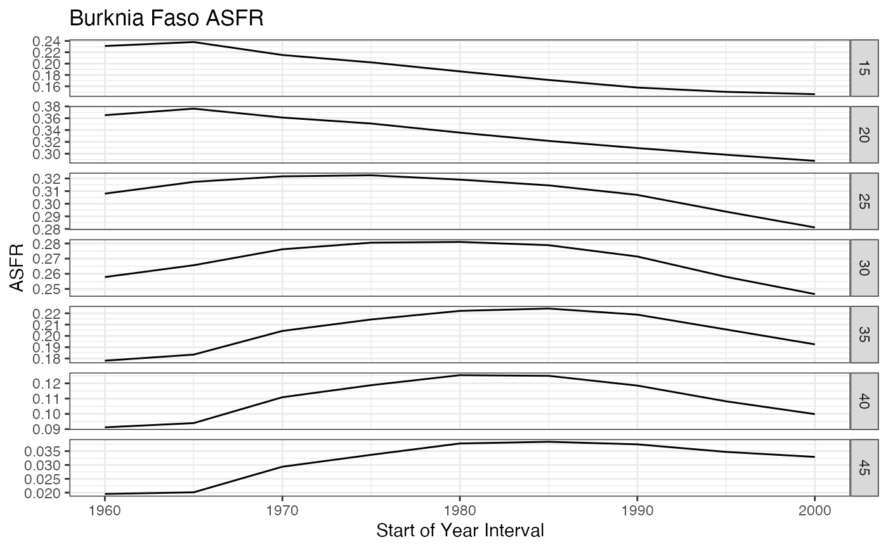

Create a basic ggplot2 line graph with the option to also add points. This could be used for plotting time series or age patterns for different parameters. One could just use their own ggplot syntax to make these graphs but this function provides a basic structure that encourages improved formatting (requires axis titles, uses commas for the y-axis values etc.)
plot_line_graph( dt, plot_title, x_col, x_axis_title, y_col, y_axis_title, y_axis_commas = FALSE, y_lb = NULL, y_ub = NULL, ribbon_alpha = 0.2, point_col = NULL, facet_type = "grid", facet_form = "age_name ~ sex", facet_scales = "free_y", scale_manual = NULL )
| dt | [ |
|---|---|
| plot_title | [ |
| x_col | [ |
| x_axis_title | [ |
| y_col | [ |
| y_axis_title | [ |
| y_axis_commas | [ |
| y_lb | [ |
| y_ub | [ |
| ribbon_alpha | [ |
| point_col | [ |
| facet_type | [ |
| facet_form | [ |
| facet_scales | [ |
| scale_manual | [ |
[ggplot()] object
The scale_manual argument is a nested list of lists for each manual
aesthetic applied. The first level of the list is the name of the aesthetic,
the possible aethetics are 'colour', 'fill', 'alpha', 'shape', 'linetype',
and 'size'. Each aesthetic must have a nested list that specifies the column
in dt that the aesthetic corresponds to (col), the legend title for the
aesthetic (legend_title), and the scale that maps values of the aesthetic
to the values of the column in dt (scale).
The groupings for lines and points will be determined by the scale_manual
columns since each combination of those should be plotted separately.
plot_line_graph( dt = demCore::burkina_faso_initial_estimates$asfr, plot_title = "Burknia Faso ASFR", x_col = "year_start", x_axis_title = "Start of Year Interval", y_col = "value", y_axis_title = "ASFR", facet_form = "age_start ~ ." )